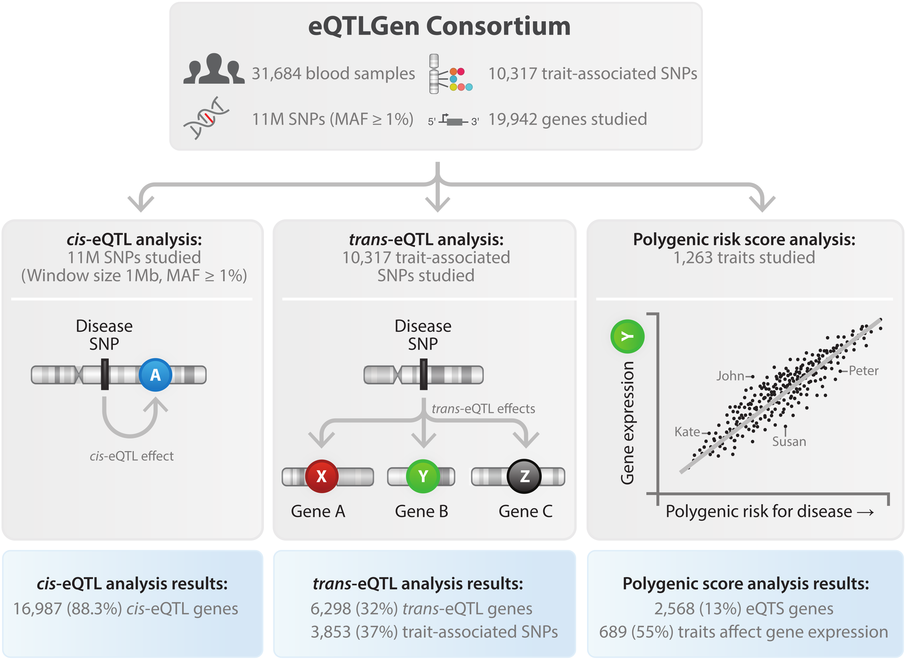

Welcome to the eQTLGen Consortium
The eQTLGen Consortium has been set up to identify the downstream consequences of trait-related genetic variants.
The consortium incorporates 37 datasets, with a total of 31,684 individuals. You can find the
cis-eQTL,
trans-eQTL,
eQTS
and replication results from our forthcoming paper on this website.

Citation
If you use the data on this website, please cite our paper:
Võsa, U., Claringbould, A.,
(…), Franke, L.; 2018;
Unraveling the polygenic architecture of complex traits using blood eQTL meta-analysis
Contact
For questions, bug reports, or requests, please contact Lude Franke (
ludefranke@gmail.com); Urmo Võsa (
urmo.vosa@gmail.com); or Annique Claringbould (
anniqueclaringbould@gmail.com).
Consortium members
The following cohorts and consortia have contributed to the discovery analyses:
- BIOS Consortium
- The Cohort on Diabetes and Atherosclerosis Maastricht (CODAM)
- Genome of the Netherlands (GoNL WGS)
- LifeLines DEEP
- The Leiden Longevity Study
- The Netherlands Study of Depression and Anxiety (NESDA)
- The Netherlands Twin Register (NTR)
- PAN
- The Rotterdam Study
- Estonian Gene Expression Cohort (EGCUT1)
- Estonian Center for Translational Genomics cohort (EGCUT2)
- CARTaGENE
- The Depression Genes and Networks study (DGN)
- The Genotype-Tissue Expression Consortium (GTEx)
- Bangladesh Vitamin E and Selenium Trial (BEST)
- Brisbane System Genetics Study (BSGS)
- Cardiology
- The Center for Health Discovery and Well Being (CHDWB)
- DIetary, Lifestyle and Genetic determinants of Obesity and Metabolic syndrome (DILGOM)
- Fehrmann study
- The Heart and Vascular Health study (HVH)
- Invecchiare in Chianti, ageing in the Chianti area study (InCHIANTI)
- The Cooperative Health Research in the Region of Augsburg (KORA F4)
- LIFE-Adult
- LIFE-Heart
- Morocco study
- The Study of Health in Pomerania (SHIP-TREND)
- The Singapore Systems Immunology Cohort (SSIC)
- Sorbs study
- Young Finns Study (YFS)
- Framingham Heart Study (FHS)